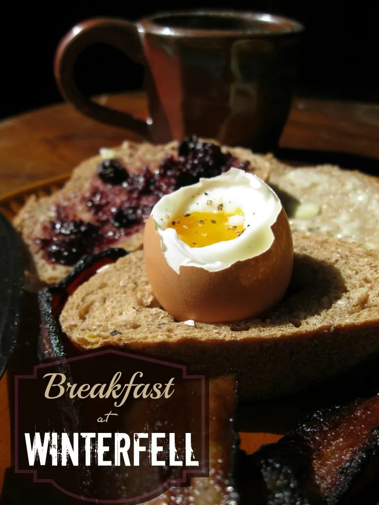

Breakfast at Winterfell
go back to main page

Description
The continental elegance of the soft boiled egg was a wonderful counterpart to the salty heartiness of the bacon. Likewise, the sweetness of the preserves and honey paired well with the other elements of the meal. It was an interesting textural experience, too. The almost creaminess of the perfectly done soft-boiled egg, the crispiness of the bacon, and the pop of berry seeds all added something to the meal. While it is a fairly hefty meal, the mint tea lightens it more than one would expect, and is the perfect finish to what might be the perfect breakfast.
Bottom line? It’s cold in The North, but this is a great breakfast for any time of year, anywhere.
Ingredients
- 2 eggs
- 6 strips of bacon
- 4 small slices rustic bread
- butter, honey, and berry preserves
- sharp white cheese, such as cheddar
- 2 mint tea bags
Steps
- Cook up the bacon to your preferences. While the bacon cooks, toast your bread, then butter it and add either preserves or honey (or both!). Begin to arrange the food on your plates, and heat water for tea. When the bacon is done, put it aside and keep it warm under another plate or a sheet of tin foil. Then you can focus on your eggs.
- Fill a saucepan about halfway with water and bring it to a simmer. Gently lower the eggs into the water one at a time.
- Cook the eggs for about 4 minutes. Don’t wander off! (although the worst that will happen is you will have hard boiled eggs- still yummy)
- Using a slotted spoon, fish the eggs out of the hot water. If you don’t plan on eating them immediately, run them under cold tap water for 30 seconds to keep them from continuing to cook in the shell.
- Place the egg in an egg cup if you have one, or in the partially hollowed out end of a bread loaf, as in the picture above. To eat, you will remove the very top 1/3 of the eggshell. Use an egg-cutter if you have one, otherwise hit the shell with a knife or edge of a spoon in a circle around the top. Carefully insert your knife/spoon into the egg and lever off the top. You’ll know your egg is perfect if the white is reasonably firm and the yolk is hot but still runny. A small spoon is ideal for this, such as a tea spoon, or a grapefruit spoon.
- Steep the mint tea for a few minutes, and Enjoy!